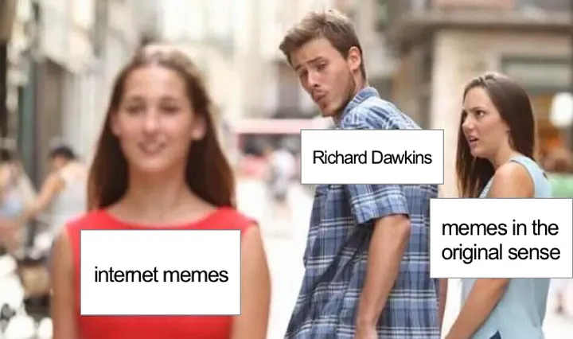
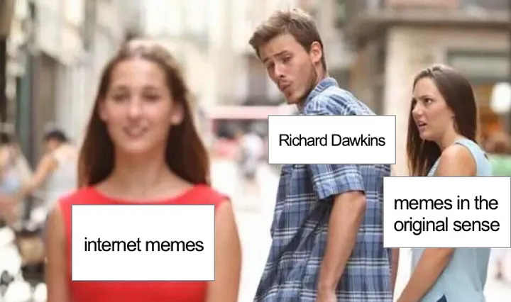
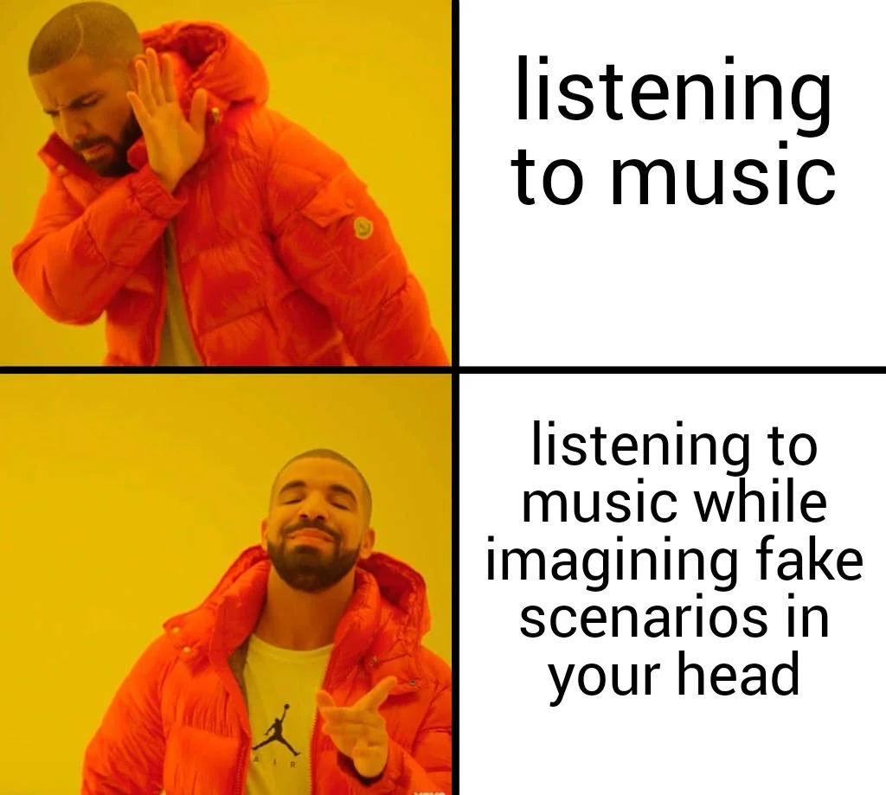
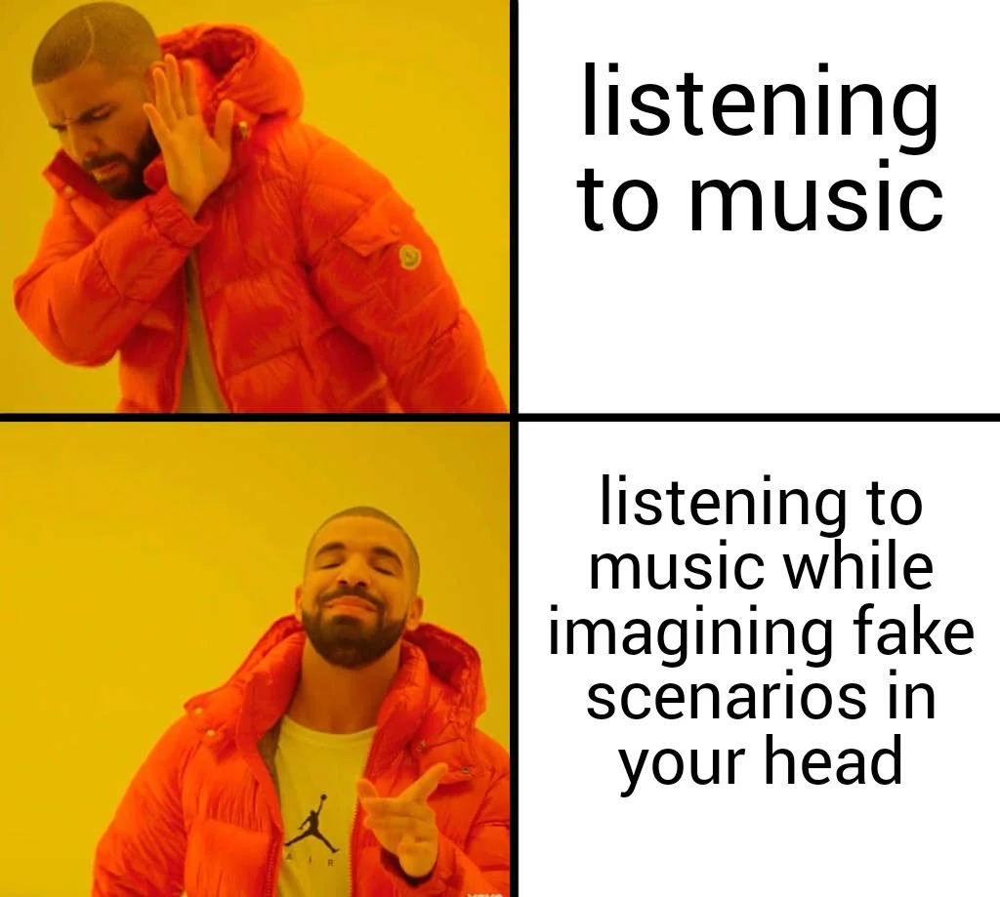

Origin of Memes
Memes, in the context of internet culture, refer to humorous images, videos, or pieces of text that are shared rapidly across online platforms. The concept of memes originated from the field of evolutionary biology, where it was introduced by British scientist Richard Dawkins in his 1976 book, "The Selfish Gene." Dawkins coined the term "meme" to describe an idea, behavior, or style that spreads from person to person within a culture. He likened memes to genes, suggesting that they replicate and evolve through cultural transmission, analogous to the biological process of evolution by natural selection. While Dawkins primarily focused on cultural phenomena such as fashion trends, catchphrases, and rituals, the concept of memes was later adapted to the digital age with the rise of the internet. In the early days of the internet, memes were predominantly text-based jokes and catchphrases shared on forums and bulletin board systems. With the proliferation of social media and image-sharing platforms in the late 2000s, memes evolved into multimedia formats, including images, GIFs, and videos. Platforms like 4chan, Reddit, and Tumblr played significant roles in the creation and dissemination of internet memes, fostering online communities where users could create and share content. Today, memes have transcended their digital origins to become an integral part of global internet culture. Serving as both a form of cultural currency and social commentary, memes offer a unique means of expression and humor, reflecting the zeitgeist of current events, trends, and societal norms. With millions of internet users worldwide actively engaging with memes on a daily basis, they continue to shape and redefine online discourse. In today's fast-paced digital world, memes are everywhere. Millions of people around the globe interact with them everyday. Memes spread quickly online, thanks to likes, shares, comments, and remixes. They shape our online conversations as they move swiftly across the internet, influencing how we communicate and connect with each other in real-time.
 

 
